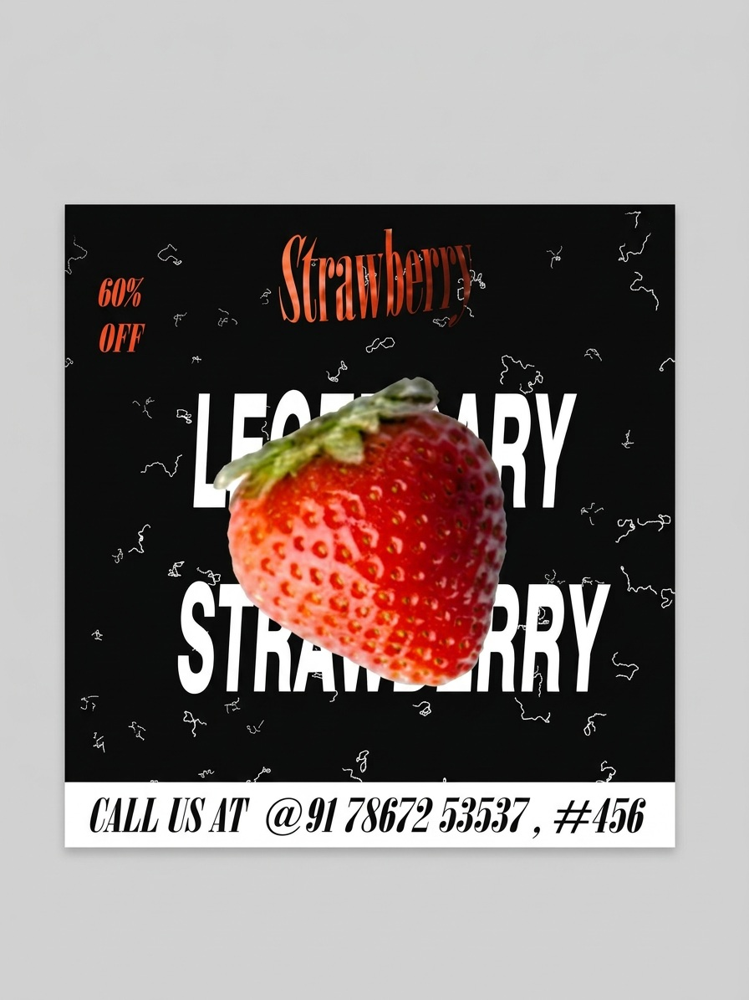
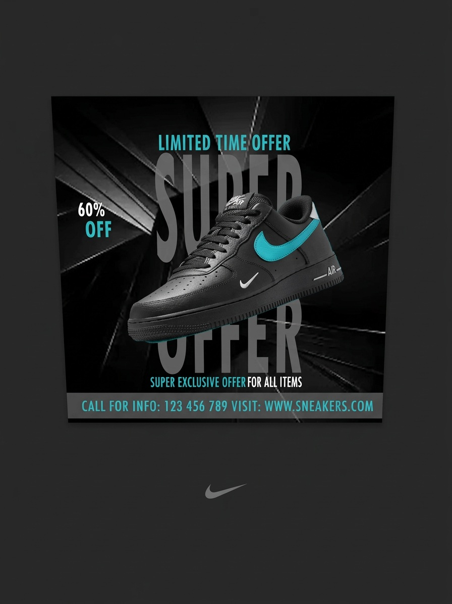
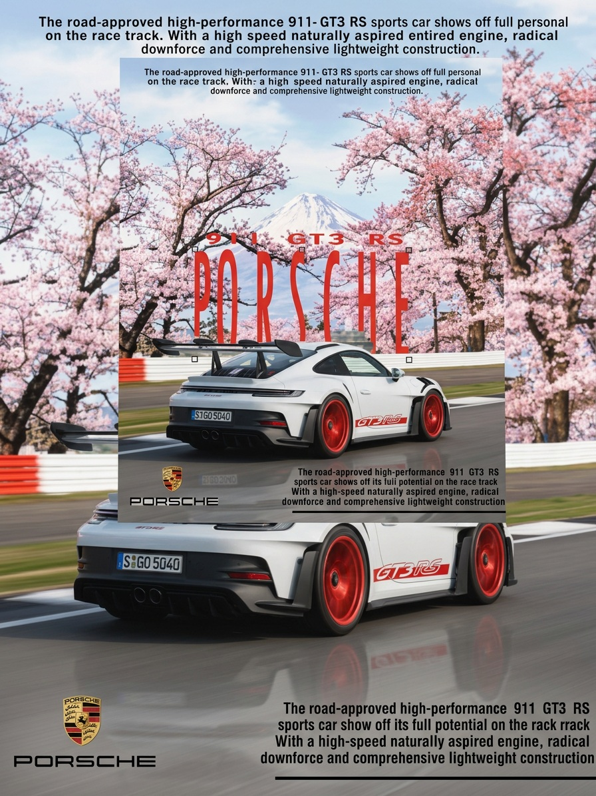

Self-initiated design exercises exploring product advertising, promotional layouts, typography and image composition.
 PRODUCT ADVERTISING
PRODUCT ADVERTISINGPRIME — Citrus Campaign
A bright product-promotion concept using a citrus palette, fruit imagery and a centred product composition.

PROMOTIONAL DESIGNStrawberry Promotion
A high-contrast promotional poster combining oversized typography, decorative line details and a central strawberry visual.

RETAIL CAMPAIGNSneaker Sale
A footwear campaign concept built around dramatic lighting, product placement and a strong teal-and-black palette.

AUTOMOTIVE VISUAL911 GT3 RS
An automotive poster experiment combining a performance-car visual, scenic background and editorial-style type.
These graphic pieces are self-initiated learning concepts, not official or commissioned brand work. Brand names and marks belong to their respective owners.